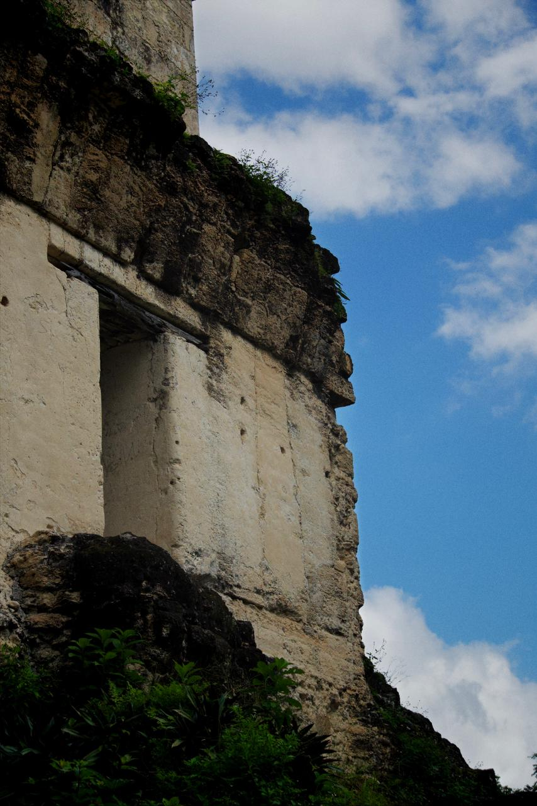
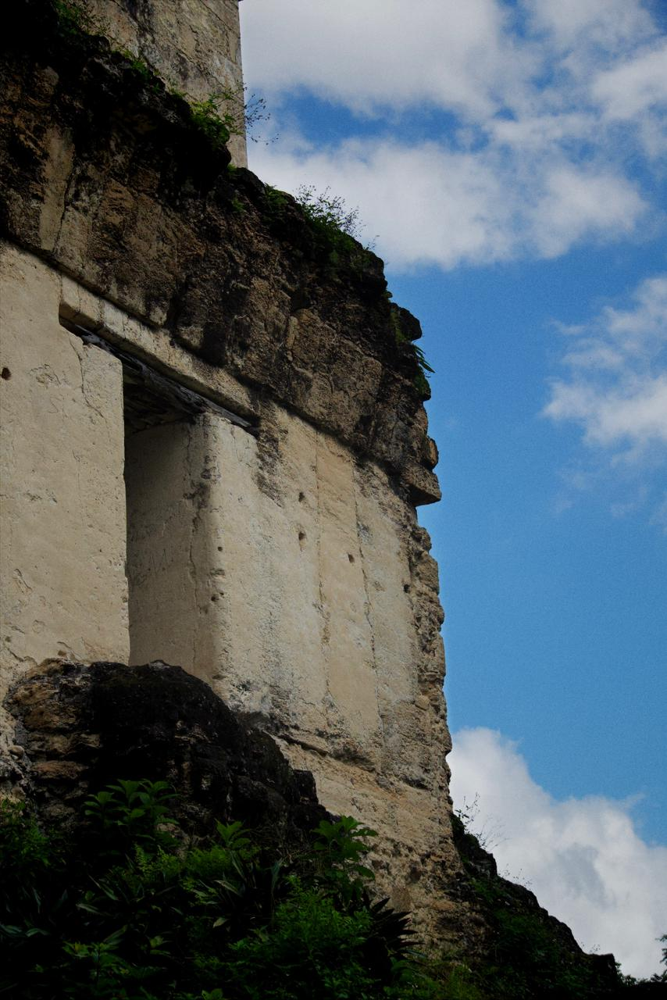

Fotografía
 

Servicios
-
Fotógrafo
Amplia experiencia en fotografía fija, con dominio del manejo de la luz en ambientes controlados y exteriores para capturar imágenes impactantes y de alta calidad
-

Videógrafo
Especializado en la creación de contenido cinematográfico, con un enfoque en movimientos de cámara precisos y planos dinámicos que realzan la narrativa visual.
-
Editor de Fotografía
Habilidad avanzada en la edición de fotografías RAW utilizando Adobe Photoshop y Lightroom, garantizando acabados profesionales y adaptados a cada proyecto
-
Editor de Video
Competencia sólida en postproducción de video, incluyendo edición, ajustes de sonido y colorización profesional con DaVinci Resolve.
Copyright © 2025 Daniel Ruiz